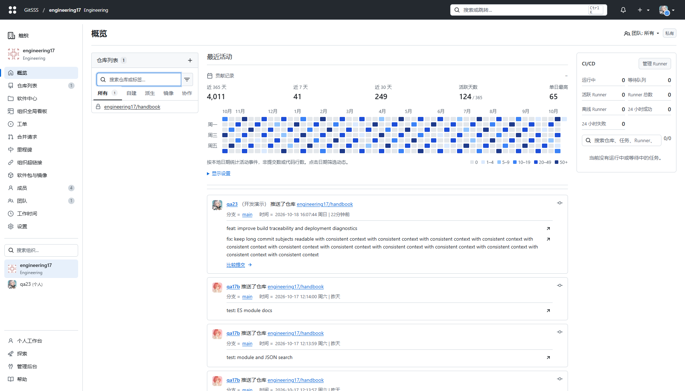
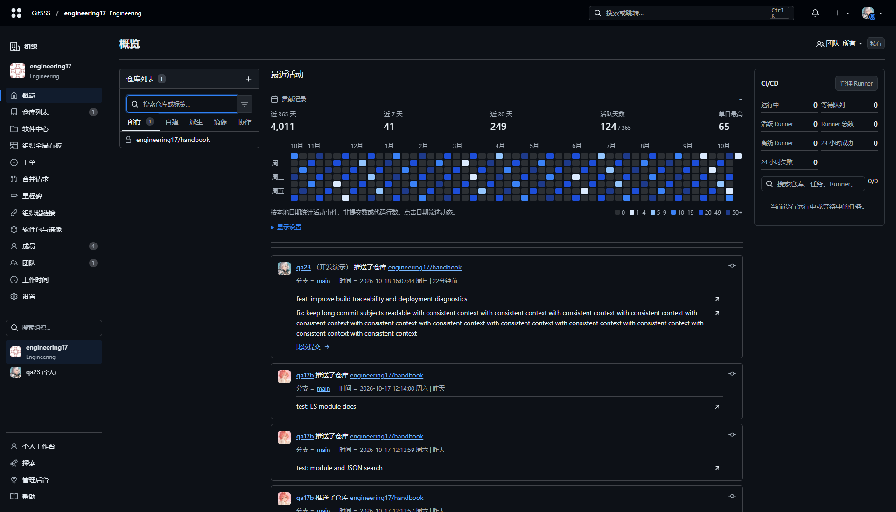
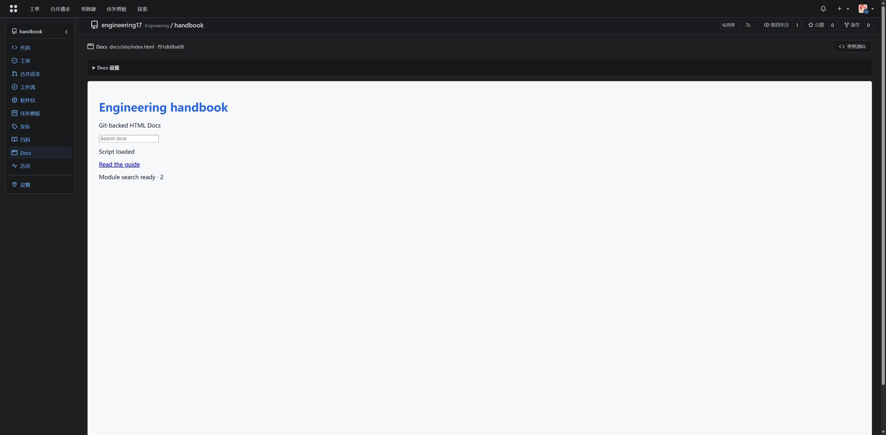
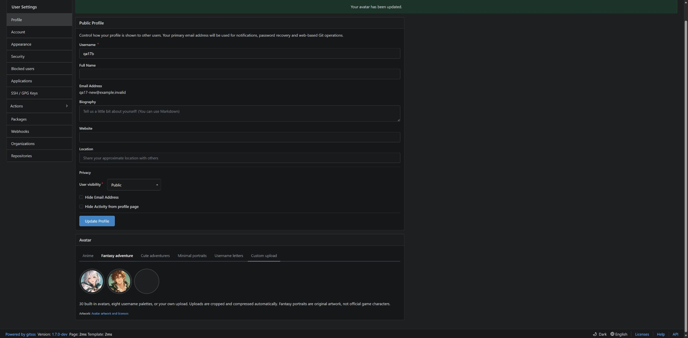

HTML Docs, notifications and profiles
Native repository documentation and configurable collaboration messages.
Repository HTML Docs
The repository sidebar now includes Docs. Push a static site to docs/site/index.html, docs/index.html, site/, _site/ or the repository root. Administrators can choose a ref, directory and entry file. Relative assets are served from a pinned commit, including repository-owned LFS files up to 32 MiB. No checkout or duplicate tree is created. Private sandbox assets use a signed user/repository/commit/revision read capability expiring after 30 minutes; current account and permissions are rechecked on every request. Reload to renew, and do not share the iframe URL.
HTML file preview
HTML/HTM 文件页在 Raw 左侧提供高亮 Preview HTML，固定到当前提交并新开标签。相对 JS、CSS、图片与模块可读取整个有代码权限的仓库树；不会复制文件或修改 Docs 设置，Docs 停用时也可预览。沿用 30 分钟权限能力、沙箱与逐请求权限复核，禁止应用 Cookie、父页面、外部 CDN/API、越过仓库根的路径、符号链接、Git 元数据及超过 32 MiB 的资源。
HTML isolation
Code-read permission is required. Content runs in an opaque sandbox with local classic scripts, ES modules, CSS, fonts, images and scoped JSON search indexes. ES modules and fetch/XHR for local JSON search indexes work within the scoped Docs directory. Parent application access, forms, popups, external CDN/API resources and service workers are unavailable. Bundle dependencies locally and use relative URLs. Stale administrator saves return 409. A git push publishes updates without Actions workflows.
Activity cards
组织、个人与资料页共享简洁活动卡片：账号与备注、完整仓库名称、分支、时间和换行显示的提交消息分区呈现。消息保留独立提交链接，多提交保留比较链接。时间按浏览器时区显示 yyyy-MM-dd HH:mm:ss 星期 | 相对时间，例如 2026-10-16 09:08:07 周五 | 前天；昨天和前天按本地日历日计算，支持跨午夜与夏令时。时区在可访问提示中显示；无 JavaScript 时保留完整时间及偏移。共用定时器，无新增网络轮询，不改变权限、分页或存储。
Full-width activity calendar
热图利用整个中栏，汇总近 365 天（含今天）、近 7/30 天、活跃天数与单日最高。统计继承已有活动权限，以本地日历日和活动发生时间聚合，排除前置补齐日期及未来日期，修复旧 API 额外一周导致年度数字偏大的展示问题。活动次数不是提交数、代码行数或生产力评分。
图例明确显示 0、1–4、5–9、10–19、20–49、50+。显示设置支持修改五档颜色和递增整数下界，第一级固定 1，最大 1,000,000；应用、恢复默认及错误提示在当前页完成。偏好保存在当前浏览器同源存储，不改变服务端数据。每个日期都有具体日期/次数提示，键盘 Tab 进入一次，方向键按日/周移动，Home/End 到首尾，Enter/Space 筛选动态。宽度不足时仅日历内部滚动。团队切换复用现有权限接口并卸载旧视图，不新增逐日请求。
桌面演示截图 · 2026-10-18（合成演示数据）


Custom repository tags
仓库管理员可在 About 区域管理最多 25 个标签，输入后按 Enter 自定义添加，支持中文、小写 Unicode 文字、数字、下划线、连字符和句点；以文字或数字开头，最长 35 个字符。普通仓库搜索和 Ctrl+K 均可匹配标签，点击标签进入精确筛选。保存失败保留输入并就地提示；取消还原已保存内容。标签建议和其仓库计数只基于当前用户有权访问的仓库，API 的 public-only 限制同样生效。
沿用 topic/repo_topic、repository.topics 与既有 /topics API，不改变 Git/LFS 数据和权限。旧标签规则保持有效；旧版二进制可读取新增中文标签，但其编辑校验可能拒绝新格式。
Eight notification channels
Feishu/Lark interactive cards, Discord embeds, Telegram HTML with buttons, WeCom/DingTalk Markdown, Slack Block Kit, Teams Adaptive Cards and Matrix formatted notices. Feishu push cards separate repository, branch, account plus remark, linked trackId, CI/CD and message-only content. Other channels retain their detailed commit summaries. Full-change navigation remains available. Each hook has independent events, branch/repository/actor filters, bot exclusion, English/Chinese, commit limits, body detail, templates and supported color/footer settings.
Compact Feishu push cards
操作人同时显示账号与备注（full_name），筛选仍按账号匹配。trackId 用新 head SHA 前 12 位显示，链接指向完整 40/64 位提交；同一提交重复推送仍是同一 trackId。没有新提交时用完整投递 UUID，不构造无效提交链接。提交区只显示消息，不重复哈希、作者、文件列表或提交数；高级自定义正文模板继续有效。
CI/CD · Actions 在发送时只读查询本次 push 对应的本地 GitSSS Actions 记录（GitHub 兼容引擎），显示已触发及排队、运行、成功、失败等状态。必须匹配仓库、SHA、分支、push 类型、before/after 和账号，不把同 SHA 的其他事件当成本次触发。最多读取 20 个候选，超时两秒；不会执行工作流或请求外部 CI。发送可能早于 Actions 检测，故无记录显示“发送时尚无运行记录”，查询失败或信息不足显示“暂时无法确认”。点击状态进入仓库 Actions 查看最新详情；卡片是发送时快照，后续状态可订阅 workflow_run/workflow_job 通知。
Delivery and secrets
Native endpoint paths and queries are redacted from delivery history. HTTP 200 responses containing provider error codes fail delivery. Fix the hook and use manual redelivery; automatic timeout retries are intentionally absent. Manual tests bypass routing filters. The administrator REST hook API accepts config.notification as a JSON string and preserves provider metadata on partial edits. Keep webhook URLs, tokens and actual destination settings out of Git.
Avatar styles
Thirty local presets grouped into anime, original fantasy adventure, Adventurer and Lorelei tabs; eight username-initial palettes; custom upload with automatic square crop/compression. Existing preset IDs remain stable. New fantasy illustrations are original, not bundled game characters. The embedded manifest makes additional styles extensible.
Primary email
Edit the primary address directly under Account. Uniqueness is global and case-insensitive, including aliases. The old address remains an alias for commit attribution. Confirmation-enabled sites require activation before changing primary email and throttle confirmation sends.
Upgrade and rollback
No schema migration, repository/LFS relocation, object rewriting, SSH-key change or Actions storage change. Existing app_state and webhook metadata hold settings. Roll back the binary while retaining a configuration/database backup. Do not restart unrelated build or game services.
Complete Markdown reference and API example · Feishu · Telegram · Discord
Demonstration screenshots · 2026-10-17


Feishu repository, commit trackId, Actions and change links use the configured public ROOT_URL, including its subpath, even when an agent calls the local API.